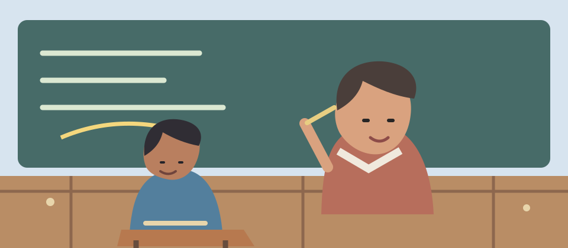
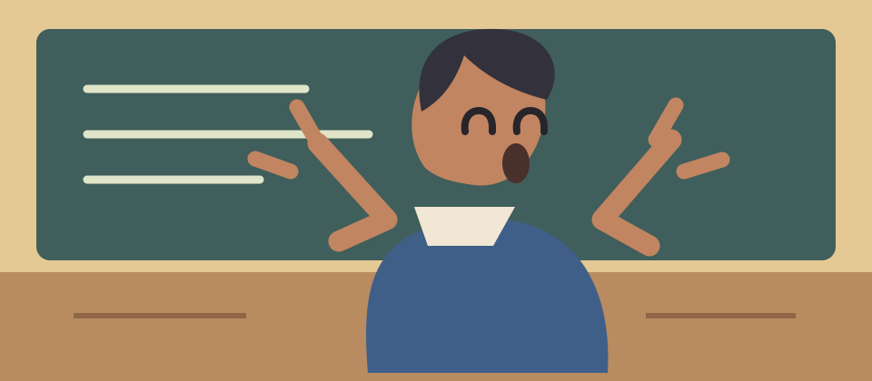
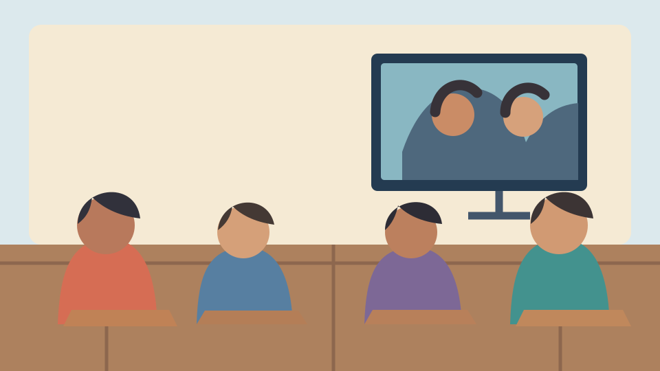

Los debates presidenciales de 2023, resumidos en una imagen.
#DebatePresidencial2023 #Argentina

Manuel AdorniSi no te gusta laburar, perfecto, pero no esperes que el resto te mantenga.
Espectador:}
Cuando se prende el debate.